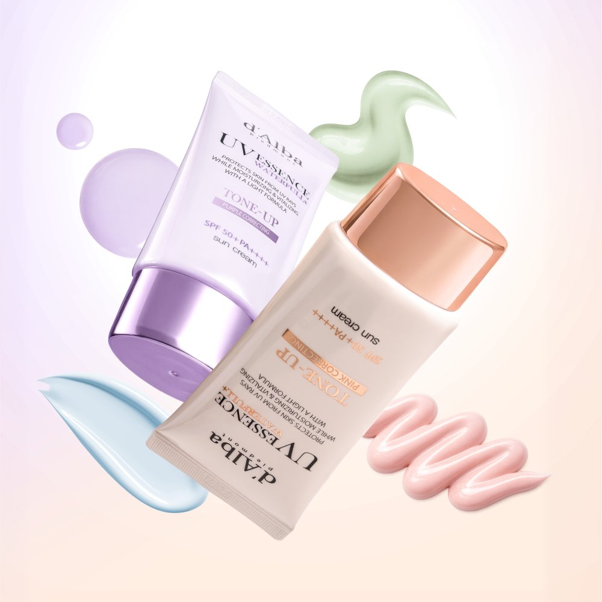
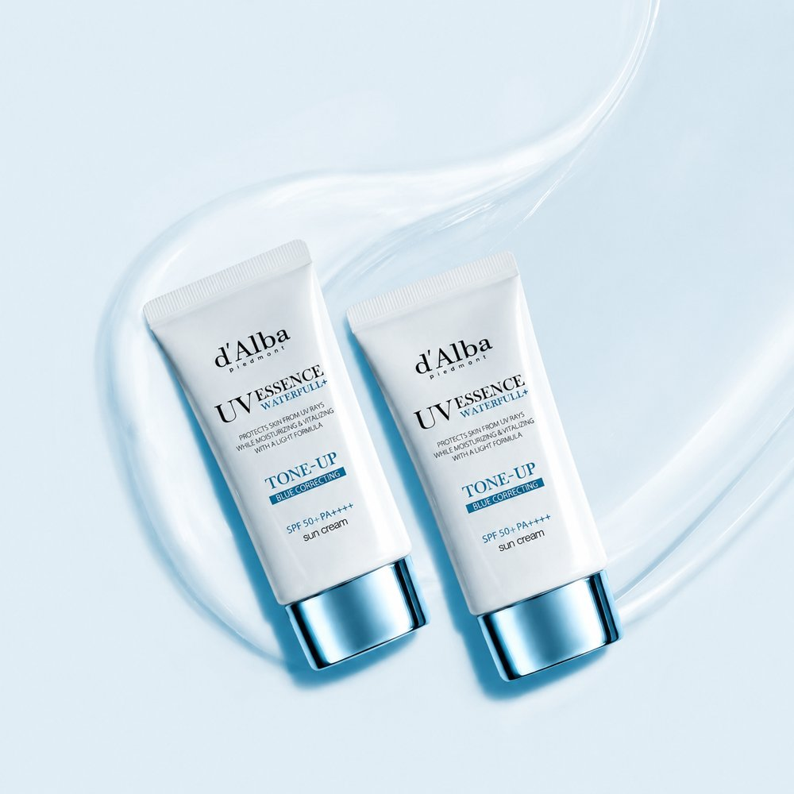
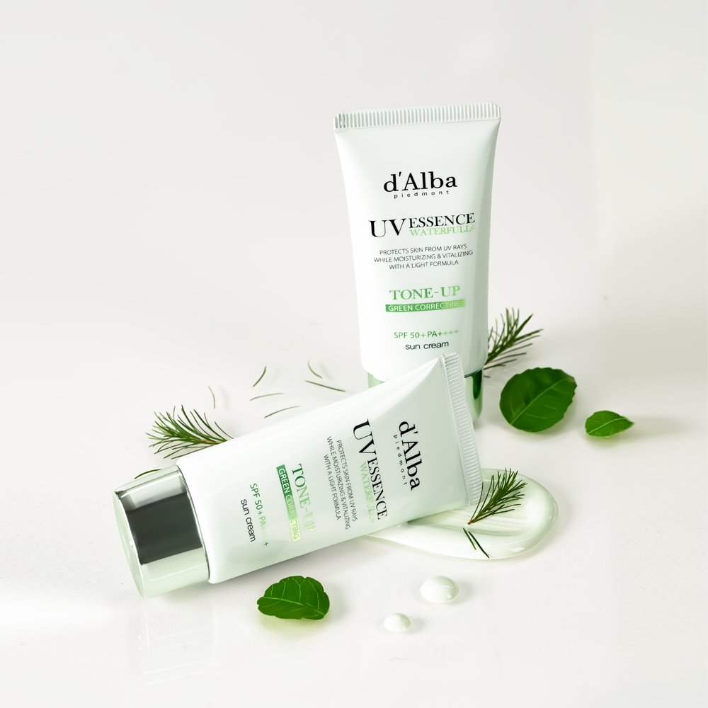
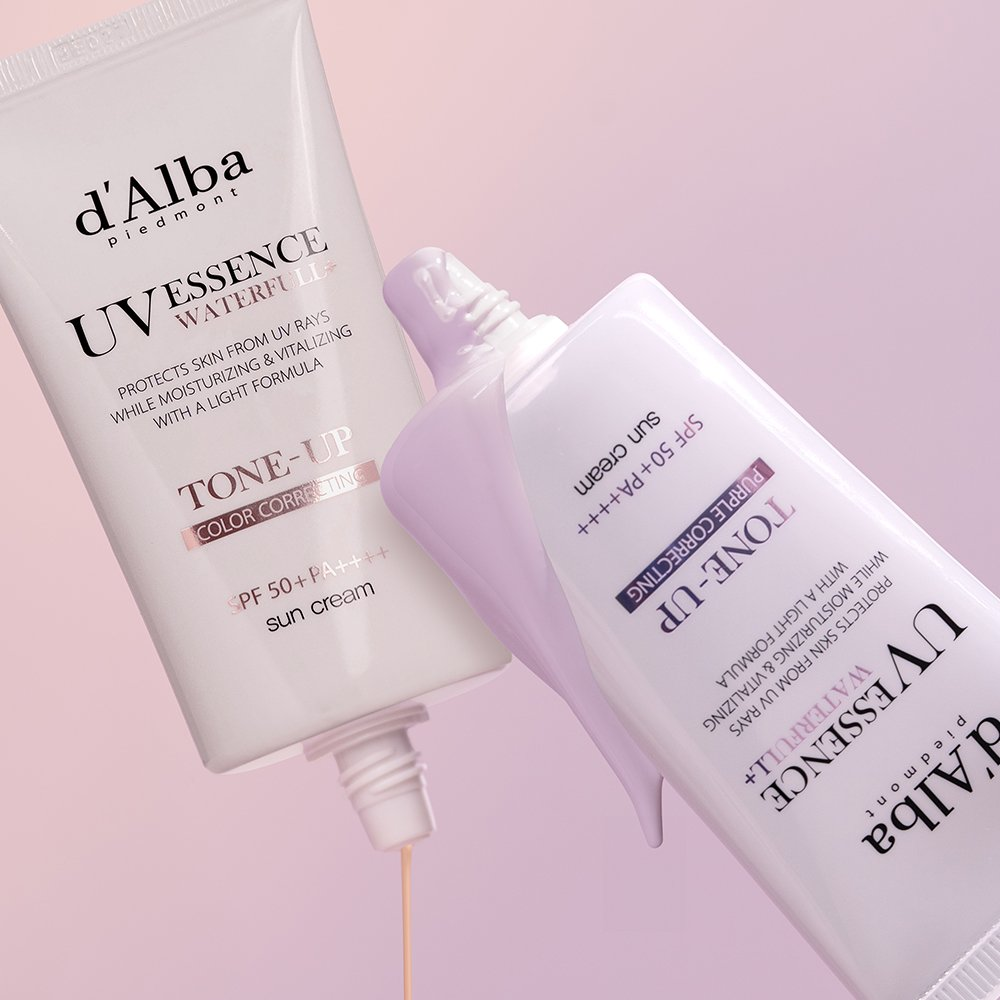

d'Alba Waterfull Tone-Up Sun Cream Review at a Glance
This d'Alba Waterfull Tone-Up Sun Cream review is for anyone who wants a sunscreen that also makes their skin look a little more even. d'Alba (달바) is the Korean brand behind the famous white truffle mist serum, and its vegan Waterfull Tone-Up Sun Cream is rated SPF50+ PA++++ on the Korean listing.
It comes in 4 colors, and in Korea the official store sells it as a 50ml two-tube set. The listing describes a moist, essence-like texture with a soft glow that works under makeup and on your body too.

Pick Your Color: Lavender, Pink, Mint or Blue
Think of a tone-up sunscreen as a very sheer primer: it evens out your tone a little, but it won't cover spots like foundation.
| Color | Best For | What It Does (brand descriptions) |
|---|---|---|
| 💜 Lavender | Yellowish or sallow tone | Brightens a dull, yellow cast; more semi-matte |
| Pink | Pale or tired-looking skin | Adds a healthy rosy glow |
| 💚 Mint Green | Redness | Calms the look of red cheeks and nose |
| 💙 Blue | Dullness, uneven tone | A clear, bright look; listed as zinc-oxide-free |


Formulas differ by color. Some shades list soothing ingredients like panthenol, centella and niacinamide, and some list fragrance components such as citrus oils. Check the full ingredient list on your tube.
Key Details
| Item | Details |
|---|---|
| Brand | d'Alba (달바) · Korea |
| Product | Waterfull Vegan Tone-Up Sun Cream |
| Sun Protection | SPF50+ PA++++ (Korean listing) |
| Size | 50ml × 2 tubes (Korean set) |
| Colors | Lavender · Pink · Mint Green · Blue |
| Texture | Moist, essence-like with a soft glow |
| Use | Face and body · works as a makeup base |

Photo note: These are the 4 real product photos from the Korean listing. We didn't add any AI-generated images.
How to Apply It
- Finish skincare first: Toner and moisturizer, then wait a minute.
- Use enough: About two finger-lengths for your face is the common guide.
- Dot and spread: Dot it on, then spread outward in thin layers.
- Let it set: Wait 1–2 minutes before cushion or foundation.
- Reapply: Every 2–3 hours outdoors, and after sweating.
Pros & Cons
✅ Pros
- High SPF50+ PA++++ protection and light tone correction in one step.
- Four shades for different skin concerns.
- Moist texture that doesn't feel tight or chalky.
- Two tubes: one for home, one for your bag.
⚠️ Cons
- Tinted sunscreens can look slightly white on deeper skin tones.
- Some shades include fragrance components.
- US and Korean versions can differ in size, label and formula.
Who It Suits (and Who Should Skip It)
- Great for: No-makeup days when you still want an even, fresh look.
- Great for: Makeup wearers who want sunscreen and primer in one.
- Maybe skip: If you want a totally clear sunscreen or avoid fragrance.
d'Alba Tone-Up Sun Cream FAQ
Is d'Alba Waterfull Tone-Up Sun Cream SPF50?
Yes. The Korean listing we checked rates it SPF50+ PA++++, the highest sun-protection labels used in Korea.
Which color should I pick?
Lavender for a yellowish or sallow tone, pink for pale or tired-looking skin, mint green for redness, and blue for dullness. Test a little on your jawline in daylight before you commit.
Does it leave a white cast?
Tone-up sunscreens are designed to brighten, so they can look slightly white on deeper skin tones. A thin layer and a minute to set help. If you have a deep skin tone, test it before you buy a full set.
Is it fragrance-free?
Not every shade. Published ingredient lists for some colors include fragrance components such as citrus oils, so patch test if your skin is sensitive.
d'Alba Waterfull Tone-Up Sun Cream
SPF50+ PA++++ · 4 colors · vegan